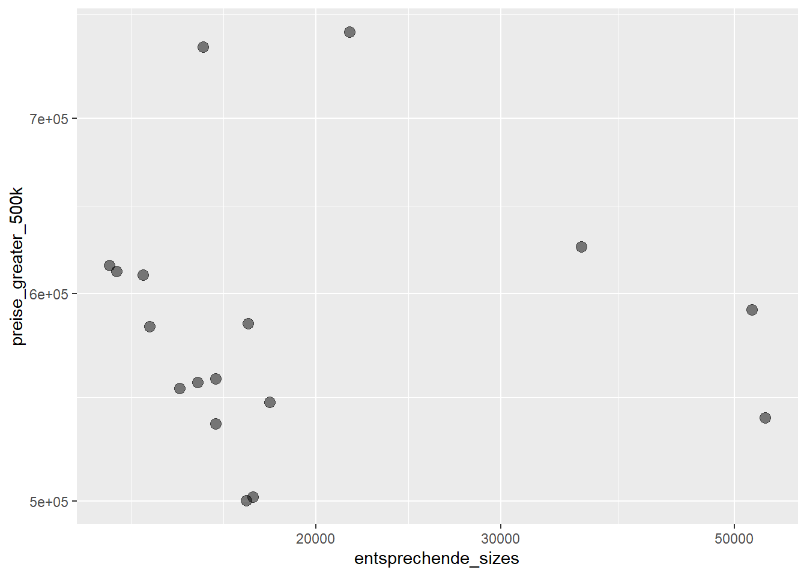
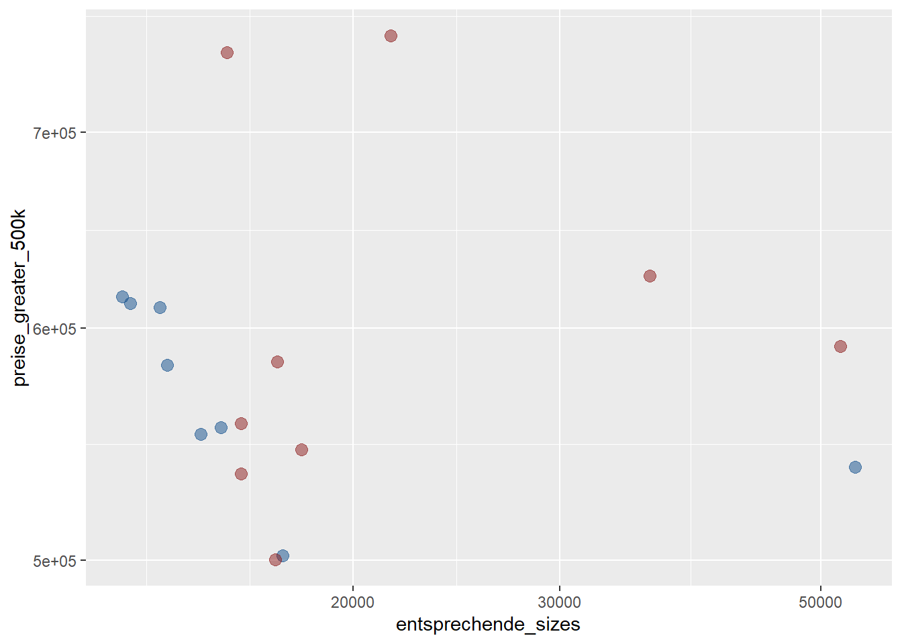
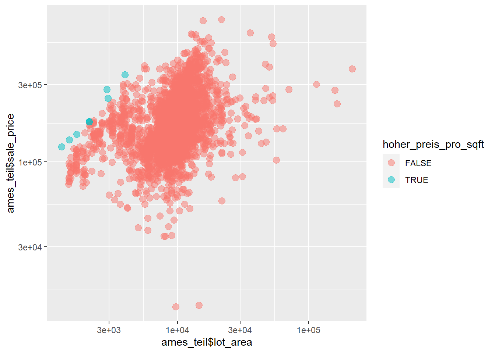

library(tidyverse)
library(janitor)
data(ames, package = 'modeldata')
ames_teil <- ames %>%
clean_names() %>%
select(sale_price, lot_area, ms_zoning, neighborhood)WiWi BrushUp Kurs 2022
Ames Housing - Zugriff auf Daten
Zielsetzung
Unser Ziel ist einfach.
Schritt 1: Mehr Filtern.
Schritt 2: “Großer Filter”-Frage klären.
Aufgaben
Wir haben die filter() Funktion bereits das ein oder andere mal in Action gesehen während dieses Kurses. In diesem Tutorial lernen wir noch ein paar weitere Filterbedingungen kennen und versuchen, den Zusammenhang zu Vektoren kennenzulernen.
Dazu betrachten wir erneut unseren Datensatz ames_teil.
Einfache Bedingungen kennen wir ja bereits
ames_teil %>%
filter(sale_price >= 100000)# A tibble: 2,693 x 4
sale_price lot_area ms_zoning neighborhood
<int> <int> <fct> <fct>
1 215000 31770 Residential_Low_Density North_Ames
2 105000 11622 Residential_High_Density North_Ames
3 172000 14267 Residential_Low_Density North_Ames
4 244000 11160 Residential_Low_Density North_Ames
5 189900 13830 Residential_Low_Density Gilbert
6 195500 9978 Residential_Low_Density Gilbert
7 213500 4920 Residential_Low_Density Stone_Brook
8 191500 5005 Residential_Low_Density Stone_Brook
9 236500 5389 Residential_Low_Density Stone_Brook
10 189000 7500 Residential_Low_Density Gilbert
# ... with 2,683 more rowsMehrere Bedingungen und Negation
Mehrere Bedingungen können wir einfach mit Kommata getrennt in die Filterbedingung schreiben. Nutze die Funktion between() und den Operator %in%, um Grundstücke zu finden, die in der Nachbarschaft North_Ames oder Gilbert sind, und größer als 18000 sqft aber kleiner als 22000 sqft sind.
# A tibble: 12 x 4
sale_price lot_area ms_zoning neighborhood
<int> <int> <fct> <fct>
1 141000 19138 Residential_Low_Density Gilbert
2 199500 18494 Residential_Low_Density Gilbert
3 180000 19900 Residential_Low_Density North_Ames
4 176000 19296 Residential_Low_Density North_Ames
5 175000 21872 Residential_Low_Density Gilbert
6 154204 18160 Residential_Low_Density Gilbert
7 129000 18450 Residential_Low_Density North_Ames
8 301600 21281 Residential_Low_Density North_Ames
9 320000 19378 Residential_Low_Density Gilbert
10 192140 21930 Residential_Low_Density Gilbert
11 167000 21299 Residential_Low_Density North_Ames
12 277500 18275 Residential_Low_Density North_Ames Anschließend finde alle Häuser, die günstiger als $25000 oder teurer als $600000 sind. Verwende dazu den ! Operator.
# A tibble: 8 x 4
sale_price lot_area ms_zoning neighborhood
<int> <int> <fct> <fct>
1 611657 12919 Residential_Low_Density Northridge_Heights
2 12789 9656 Residential_Medium_Density Old_Town
3 610000 13693 Residential_Low_Density Northridge_Heights
4 615000 12720 Residential_Low_Density Northridge_Heights
5 13100 14584 A_agr Iowa_DOT_and_Rail_Road
6 745000 15623 Residential_Low_Density Northridge
7 755000 21535 Residential_Low_Density Northridge
8 625000 35760 Residential_Low_Density Northridge Geht Filtern auch mit dem Klammersyntax?
Na klar geht das! Wir haben ja bereits gesehen, dass man mit Vektoren einzelne Zeilen und Spalten per [] extrahieren kann.
ames_teil[seq(from = 250, to = 2750, by = 250), c('sale_price', 'lot_area', 'ms_zoning', 'neighborhood')]# A tibble: 11 x 4
sale_price lot_area ms_zoning neighborhood
<int> <int> <fct> <fct>
1 245350 10475 Residential_Low_Density College_Creek
2 265000 10208 Residential_Low_Density Northridge
3 155000 8094 Residential_Medium_Density Old_Town
4 286000 4923 Residential_Low_Density Stone_Brook
5 139000 7350 Residential_Low_Density North_Ames
6 148000 3675 Residential_Medium_Density Edwards
7 206580 10936 Residential_Low_Density Gilbert
8 152000 5400 Residential_Medium_Density Old_Town
9 134000 9187 Residential_Low_Density Mitchell
10 260000 16059 Residential_Low_Density Northridge
11 224500 9069 Residential_Low_Density Sawyer_West Das gleiche funktioniert auch mit Vektoren, die durch Filterbedingungen erzeugt wurden. Gucken wir dazu ein kleines Beispiel an. Zunächst brauchen wir einen winzigen Datensatz.
ames_small <- ames_teil[1:3, ] # slice(ames_teil, 1:3) = Zeilen 1 bis 3
ames_small# A tibble: 3 x 4
sale_price lot_area ms_zoning neighborhood
<int> <int> <fct> <fct>
1 215000 31770 Residential_Low_Density North_Ames
2 105000 11622 Residential_High_Density North_Ames
3 172000 14267 Residential_Low_Density North_Ames Nun können wir durch Vergleiche einen Booleanvektor erzeugen. So bezeichnen wir Vektoren, die nur die Einträge TRUE oder FALSE beinhalten.
ames_small$ms_zoning == 'Residential_High_Density'[1] FALSE TRUE FALSETRUE bzw. FALSE ist genau dort, wo Bedingung stimmt bzw. nicht stimmt. So ein Vektor kann genutzt werden, um mit Klammern auf Zeilen und Spalten eines tibbles zuzugreifen:
ames_small[c(FALSE, TRUE, FALSE), ]# A tibble: 1 x 4
sale_price lot_area ms_zoning neighborhood
<int> <int> <fct> <fct>
1 105000 11622 Residential_High_Density North_Ames Das ist also genau das gleiche wie
ames_small[ames_small$ms_zoning == 'Residential_High_Density', ]Das ist im Wesentlichen wie filter() im Hintergrund funktioniert. Meiner Meinung nach bietet filter() aber den schöneren Syntax. Nichtsdestotrotz ist der das Arbeiten mit Vektoren wie hier demonstriert sehr flexibel. Und wenn ich mal mit einem Vektor statt mit einem ganzen tibble arbeiten muss, dann ist dieser Syntax oft genau das richtige. Dort kann man mit Klammern auch genau die Stellen auswählen, wo eine Filterbedingung TRUE zurückgeliefert hat.
preise <- ames_teil$sale_price
preise[preise > 500000] [1] 538000 611657 501837 555000 610000 582933 552000 615000 591587 500067
[11] 745000 755000 545224 556581 535000 625000 584500Betrachte nun den folgenden Vektor
x <- c(1, 2, 5, NA, 0, 1, NA)
x[1] 1 2 5 NA 0 1 NADieser enthält fehlende Werte NA. Nutze die Funktion is.na() und [], um die fehlenden Werte loszuwerden.
[1] 1 2 5 0 1Kann man eine Grafik ohne data Argument erstellen?
Nachdem wir nun Vektoren filtern erstellen können, wollen wir diese nun nutzen, um Grafiken zu erstellen. Man kann nämlich auch ggplot() ohne einen tibble, also ohne ein data Argument, aufrufen. Betrachte dazu folgendes Beispiel.
indizes <- (preise > 500000)
preise_greater_500k <- preise[indizes]
entsprechende_sizes <- ames_teil$lot_area[indizes]
ggplot() +
geom_point(
aes(x = entsprechende_sizes, y = preise_greater_500k),
size = 3,
alpha = 0.5
) +
scale_x_log10() +
scale_y_log10()
Hier mussten wir ggplot() ein wenig überlisten. Wir haben nämlich unsere Vektoren in ins mapping über aes() geschrieben, obwohl wir dies ja eigentlich für Variablennamen aus dem Datensatz vorgesehen haben. Hier haben wir aber gar keinen Datensatz angegeben. Deswegen wäre es eigentlich naheliegend aes() gar nicht zu verwenden. Aber ggplot() weiß nicht, was zu tun ist, wenn so gar kein mapping angegeben ist, deswegen müssen wir wohl oder übel aes() doch verwenden (und ggplot() weiß dann wie diese Angabe trotz fehlenden data Arguments zu verstehen ist).
Wenn wir x und y-aesthetics manuell angeben können, dann können wir das erst recht für Farben. Erzeuge einen Vektor farben, der folgendermaßen aussieht.
[1] "dodgerblue4" "dodgerblue4" "dodgerblue4" "dodgerblue4" "dodgerblue4"
[6] "dodgerblue4" "dodgerblue4" "dodgerblue4" "firebrick4" "firebrick4"
[11] "firebrick4" "firebrick4" "firebrick4" "firebrick4" "firebrick4"
[16] "firebrick4" "firebrick4" Dabei können dir die folgenden Funktionen behilflich sein.
length(c(2, 5, 0, 9, 1))[1] 5rep('Wiederhole mich!', 3)[1] "Wiederhole mich!" "Wiederhole mich!" "Wiederhole mich!"Anschließend kannst du unsere vorherige Grafik mit Farben versehen.

Was sind die teuersten Häuser bezogen auf deren Größe?
Berechne einen Vektor preise_pro_sqft der die Preise ins Verhältnis zu der Grundstückgröße setzt. Hier die ersten 20 Einträge dieses Vektors.
[1] 6.767391 9.034590 12.055793 21.863799 13.731020 19.593105 43.394309
[8] 38.261738 43.885693 25.200000 17.590000 23.182957 21.471078 16.853381
[15] 31.085044 10.055323 13.515741 34.617518 7.367541 15.939279Nun erzeuge einen Booleanvektor hoher_preis_pro_sqft, der TRUE ist, genau dann wenn der Preis pro sq.ft größer als $80 ist. Mit dem sum() Befehl können wir zählen, wieviele Grundstücke so teuer sind. In diesem Fall wird TRUE als 1 interpretiert und FALSE als 0.
sum(hoher_preis_pro_sqft)[1] 9Nun können wir mit diesem Vektor und der eben gelernten Technik, die teuersten Häuser markieren. Wenn wir das color Argument geschickt platzieren, können wir uns auch gleiche eine Legende ausgeben lassen.
